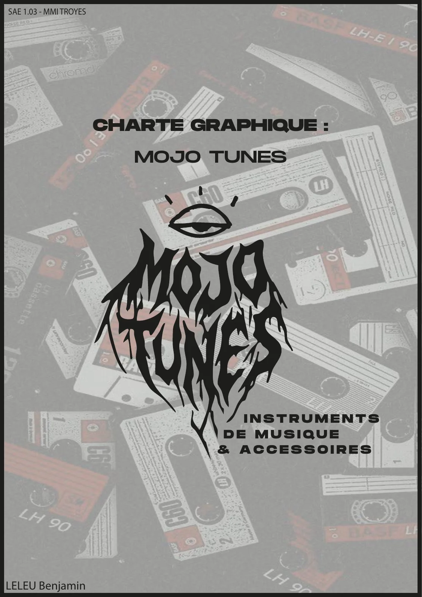
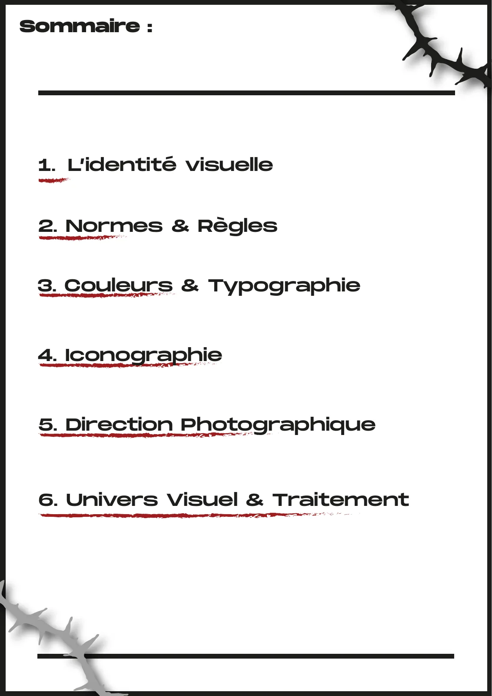

Projet 02 / Identité visuelle
Mojo Tunes.
Garder le groove.
Reprendre l’identité d’un commerce indépendant de Troyes, du premier croquis à la charte graphique.


- Mon rôle
- Designer graphique
- Cadre
- SAE 1.03 · Projet individuel
- Période
- 2025–2026 · Semestre 1
- Outils
- Illustrator · Photoshop
01 / Le brief
Une enseigne.
Son propre rythme.
Mojo Tunes est un commerce indépendant de Troyes. Pour la SAE 1.03, j’ai travaillé seul à la refonte de son identité : recherche visuelle, croquis, logo et charte graphique.
La difficulté était de moderniser l’enseigne en gardant sa personnalité. J’ai cherché cet équilibre sur papier avant de passer à Illustrator.
02 / Les recherches
Avant le vecteur,
le papier.
La planche de tendance fixe une ambiance. Les esquisses permettent ensuite de tester ce qui peut devenir un logo.
03 / Les repères
Le projet, en quelques faits.
01
Commerce indépendant · Troyes
Solo
Projet individuel
S1
SAE 1.03 · BUT MMI · 2025–2026
Ai / Ps
Illustrator & Photoshop
04 / Les fichiers
À ouvrir.
À garder.
Les logos, typographies, couleurs et mises en situation sont réunis dans le livret. Les croquis sont disponibles en image.
Voir un aperçu du dossier




Les deux premières pages sur 9. Ouvrir le dossier complet (PDF, nouvel onglet)
05 / Ce que j’en garde
Chercher juste.
Puis dessiner propre.
J’ai passé plus de temps que prévu à retoucher les croquis. Une piste trop lisse faisait perdre la personnalité du commerce ; une piste trop rétro le figeait.
Depuis, je préfère avoir une direction claire sur papier avant d’ouvrir le logiciel. La vectorisation avance mieux quand les choix de forme sont déjà posés.
Compétences travaillées · BUT MMI
- AC13.02 · Produire des pistes graphiques et des planches d’inspiration.
- AC13.03 · Créer, composer et retoucher des visuels.
- AC11.04 · Analyser la situation de communication.
- AC12.01 · Concevoir un produit ou un service de communication visuelle.